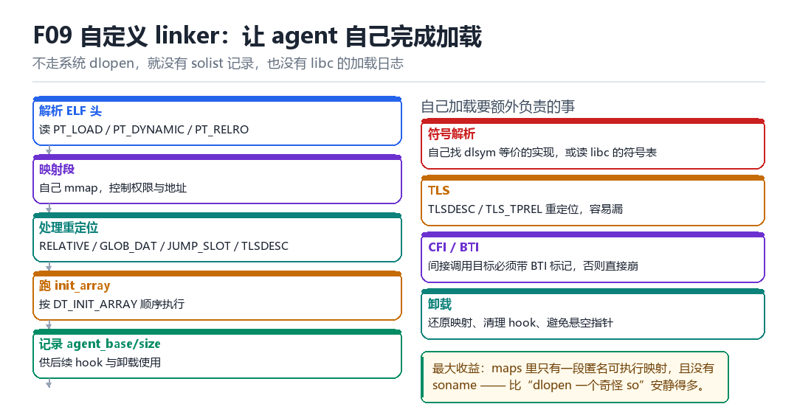

F09
Frida 自定义 linker
agent-mapper、PT_LOAD、relocation、init_array、agent_base/agent_size
不走系统 dlopen，就没有 solist 记录，也没有 libc 的加载日志。
9.1 五个阶段

- 解析 ELF 头：读
PT_LOAD、PT_DYNAMIC、PT_RELRO。 - 自己 mmap 各段，控制权限与地址（不再由 linker 代劳）。
- 处理重定位：
RELATIVE、GLOB_DAT、JUMP_SLOT、TLSDESC。 - 按
DT_INIT_ARRAY顺序跑构造函数。 - 记录
agent_base/agent_size，供后续 hook 与卸载使用。
9.2 自己加载要额外负责的事
| 责任 | 难点 | 后果 |
|---|---|---|
| 符号解析 | 没有 dlsym，要自己找 | 找不到就崩在第一次调用 |
| TLS | TLSDESC / TLS_TPREL 容易漏 | 线程局部变量读写错乱 |
| BTI / CFI | 间接调用目标必须带标记 | 一调就异常 |
| 卸载 | 还原映射、清 hook | 悬空指针、后续崩溃 |
9.3 收益与代价
收益：maps 里只有一段匿名可执行映射，没有 soname，没有 libc 的加载日志——比 dlopen 安静得多。代价：所有原本由 linker 负责的脏活，现在都是你的。
9.4 本章自测
- 自定义 linker 需要处理哪四类重定位？
- 为什么 TLS 重定位最容易漏？
- BTI 缺失会导致什么现象？
- 最小闭环应该包含哪几步？
9.5 深入：重定位的四种类型怎么处理
| 类型 | 含义 | 处理方式 |
|---|---|---|
| R_AARCH64_RELATIVE | 基址 + 加数 | 直接写 base + addend |
| R_AARCH64_GLOB_DAT | 全局符号地址 | 查符号表后写入 |
| R_AARCH64_JUMP_SLOT | GOT 表项 | 同 GLOB_DAT，惰性绑定 |
| R_AARCH64_TLSDESC | TLS 描述符 | 需要初始化 TLS 模块 |
9.6 实战：最小闭环的检查清单
- 能 mmap 所有 PT_LOAD 段，权限正确。
- 能处理 RELATIVE 重定位（至少要能跑起来）。
- 能调用一个导出函数并拿到正确返回值。
- 能正确卸载（munmap + 清理）。
9.7 原理推演：为什么“自己加载”能绕开账本
因为 solist 是 linker 的私有数据结构，只有走 dlopen 才会往里加节点。你自己 mmap、自己重定位，linker 根本不知道你存在——账本自然干净。
| 加载方式 | 进 solist | 有 soname | maps 有路径 |
|---|---|---|---|
| dlopen | 是 | 是 | 是 |
| 自建 linker | 否 | 否 | 否 |
| memfd + dlopen | 是 | 是 | 是（/memfd:） |
注意最后一行：用 memfd 再 dlopen 还是会被记录，只是路径变成 /memfd:name。这是一个“半吊子”方案，容易被抓。
9.8 数据细节：重定位的处理顺序
必须遵守的顺序
1. 先映射所有 PT_LOAD（权限按 p_flags）
2. 处理 RELATIVE（基址相关）
3. 处理 GLOB_DAT / JUMP_SLOT（符号相关）
4. 处理 TLS（如果用了线程局部变量）
5. 设置 RELRO 段为只读
6. 执行 init_array顺序错了的典型表现：init_array 里访问了一个还没重定位的全局变量，读到 NULL，然后崩。
9.9 深入：PT_DYNAMIC 里的关键项
| 标记 | 含义 | 用途 |
|---|---|---|
| DT_SYMTAB | 符号表地址 | 查符号 |
| DT_STRTAB | 字符串表地址 | 解析名字 |
| DT_RELA | 重定位表 | 处理重定位 |
| DT_INIT_ARRAY | 初始化函数数组 | 运行构造 |
| DT_SONAME | 库名 | 显示用（可伪造） |
自己加载时，这五项是“必读”的。少读一项，就会在某个环节失败——而且失败点往往离原因很远。
9.10 深入：为什么 TLS 重定位最容易漏
因为 TLS 变量的地址不是“绝对地址”，而是“相对线程指针的偏移”。不同线程的 TP 不同，所以同一个变量在不同线程里的地址不同。处理它需要“初始化 TLS 模块”这一步，而这一步在最小实现里经常被省略。
漏掉 TLS 的典型表现
// so 里有个 thread_local 变量
// 加载成功，但一读它就崩 / 读到垃圾
// 因为 TLS 偏移没被正确设置9.11 实战：先禁用 TLS 再逐步加回
如果你的 payload 不依赖 TLS，可以先编译成“不使用 thread_local”的版本——这样最小实现就能跑通。等功能稳定后，再逐步加回 TLS 支持。